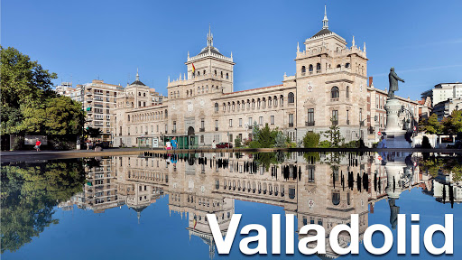
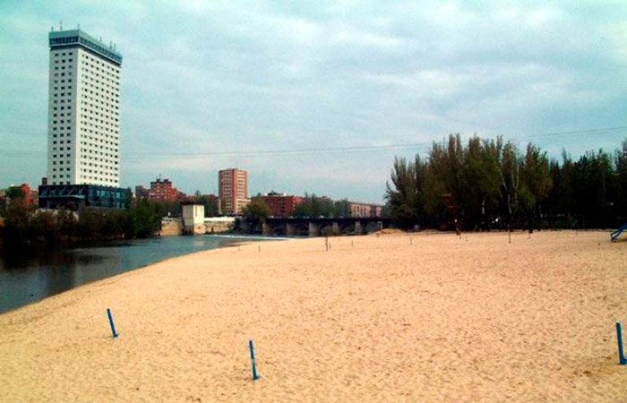
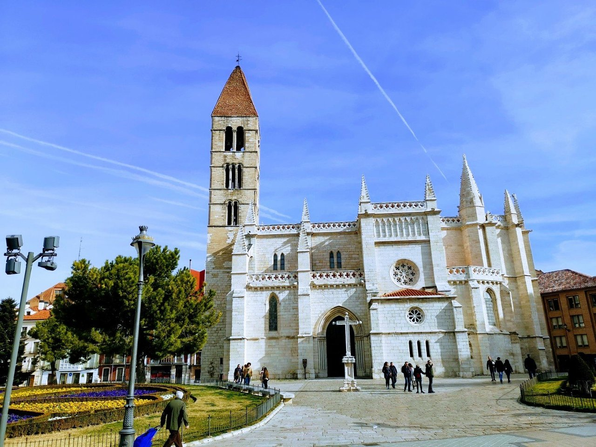

| Provincias | |
|---|---|
| León | |
| Zamora | |
| Salamanca | |
| Soria | |
| Segovia | |
| Palencia | |
| Burgos | |
| Ávila |
Valladolid es un municipio y ciudad española situada en el cuadrante noroeste de la península ibérica, capital de la provincia de Valladolid y sede de las Cortes y el Gobierno autonómicos de Castilla y León
Cuenta, según los datos del INE de 2019, con 298 412 habitantes, siendo el municipio más poblado del noroeste español. Por su parte, el área metropolitana de la ciudad, conformada por 23 municipios, es la 20.ª de España, con una población de 414 281 habitantes (INE 2013).Tiene un área de influencia socio-económica directa de más de 600 000 personas, distando solamente 47 km de Palencia y otros municipios importantes.
La ciudad de Valladolid se encuentra en la mitad norte de la península ibérica. Está situada en el centro de la Meseta Norte, división de la Meseta Central, por lo que presenta un paisaje típico, llano y con escasa vegetación.
El relieve vallisoletano lo conforma una llanura interrumpida por pequeñas series de colinas que originan un paisaje montañoso de cerros testigos como el de San Cristóbal (843 m), a pocos kilómetros de la capital. Las coordenadas de la ciudad son 41º 38' N 4º 43' O. La altitud del centro de la ciudad es de 690 m s. n. m.,50 mientras que la altitud máxima del municipio es de 863 m s. n. m., la cual se da al noreste del mismo, entre Páramo de Cabezón y Barco de San Pedro; y la altitud mínima es de 671 m s. n. m., la cual se da en el último tramo del río Duero dentro del municipio, a unos metros de su confluencia con el río Pisuerga
Foto extraída de tastingspain.es
Las principales localidades de valladolid son Laguna de Duero, Simancas,Tordesillas y Valladolid
El clima de Valladolid es mediterráneo continentalizado. De acuerdo a la clasificación climática de Köppen el clima de Valladolid en el periodo de referencia 1981-2010 es, en general, de tipo Csa (mediterráneo). Sin embargo, la temperatura media en julio y agosto supera solo ligeramente los 22 °C en la zona urbana (concretamente en el observatorio de Valladolid), pero este valor baja de los 22 °C en algunas zonas del municipio de mayor altitud, a las afueras, dándose así en esos lugares un clima de tipo Csb (mediterráneo de veranos suaves).51 El clima de Valladolid está determinado en gran medida por la ubicación de la ciudad en el centro de la cuenca sedimentaria del Duero, que, al estar casi completamente rodeada de montañas que la aíslan del mar, tiene un clima extremado y seco para lo que cabría esperar a casi 700 metros de altitud y a solo 190 kilómetros del mar Cantábrico en línea recta. Las montañas que delimitan la meseta retienen los vientos y las lluvias, excepto por el Oeste, por donde la ausencia de grandes montañas permite un pasillo abierto al océano Atlántico y es por aquí, por Portugal, por donde penetran la mayoría de las precipitaciones que llegan a Valladolid. Los vientos del norte llegan a Valladolid secos y fríos, mientras que los del sur suelen ser cálidos y húmedos, pero es por el oeste y suroeste por donde suele llegar la lluvia a Valladolid. Los vientos predominantes en Valladolid son los del suroeste, y así se ve reflejado por ejemplo en la orientación de la pista del aeropuerto de Villanubla.
Las precipitaciones están repartidas de forma bastante irregular a lo largo del año, si bien hay un mínimo acusado en verano y un máximo en otoño y primavera. La precipitación anual es de 433 mm y la humedad relativa media a lo largo del año es del 64 %. Al año hay 2624 horas de sol y 67 días de lluvia
En cuanto a las temperaturas tal vez lo más destacado sea la importante oscilación térmica diaria. Las diferencias térmicas entre el día y la noche superan en muchas ocasiones los 20 grados. La temperatura media anual es de 12,7 °C. Los inviernos son fríos con frecuentes nieblas y heladas (56 días de heladas de media). La ciudad cuenta con 9 días de nieve al año; aunque son infrecuentes las grandes nevadas por la particular situación geográfica de la ciudad. En las calmas anticiclónicas de invierno, principalmente en las largas noches de diciembre y enero, la inversión térmica produce nieblas, que pueden no levantar en todo el día. Es en diciembre y enero cuando puede aparecer la cencellada. La primavera en sus comienzos aún tiene el frío del invierno, para pasar a ser bastante suave y agradable a medida que nos acercamos al verano. Los veranos son, por lo general, calurosos y secos, con máximas entre 30 °C y 35 °C, pero mínimas suaves, superando ligeramente los 14 °C. En la ciudad es posible registrar alguna noche con mínima tropical superior a 20 ºC. Los otoños son por lo general lluviosos. En sus días se alternan las tardes suaves con temperaturas que rondan los 20-23 ºC al principio del otoño, con días más frescos e incluso fríos a medida que se va acercando el invierno. Los récords de temperaturas son los 40,2 °C, del 19 de julio de 1995, y los –11,5 °C del 14 de febrero de 1983, medidos en el observatorio de la Agencia Estatal de Meteorología (AEMET) situado en el barrio de Parquesol, el más alto de la ciudad.
Aunque este dato sea el oficial, en la ola de frío de enero de 1971, concretamente el 3 de dicho mes, se alcanzaron los –16,4 °C en el aeropuerto de Valladolid, situado a las afueras de la ciudad. Sí es así en el caso de Villanubla, cuya mínima absoluta se produce en esta ola de frío, alcanzándose, el día 3 de enero de 1971, –18,8 °C. En el observatorio de Villanubla las temperaturas son más bajas, debido a que se encuentra a 849 metros de altitud, unos 150 metros más que la ciudad
Como se indicaba anteriormente, el origen más probable del nombre de la ciudad proviene de la expresión celta Vallis tolitum (Valle de Aguas), y es que Valladolid se encuentra enmarcada en la confluencia del río Pisuerga con el río Esgueva. Este último atravesaba la ciudad en dos ramales, hasta que a finales del siglo xix se llevó a cabo su canalización.
La relación de Valladolid con el río Esgueva era ambivalente. Servía de colector de aguas residuales, por lo que impedía beber sus aguas, la insalubridad máxima y contaba con olores fétidos, pero a la vez se utilizaba para lavar y era fuerza motriz para fábricas y talleres.
A partir de 1840 y hasta 1864 Valladolid experimenta un importante desarrollo económico: se pone en servicio el Canal de Castilla y completa la línea ferroviaria Madrid-Irún, por lo que el equilibrio se rompe. De este modo el Esgueva se decide cubrir en las zonas centrales de Valladolid, y encauzar en las zonas periféricas.57 Además, también el río Duero atraviesa el municipio por el núcleo de Puente Duero, al sur de Valladolid.
El Pisuerga, principal río de la ciudad, ofrece en la actualidad diversas opciones de ocio y cultura. La embarcación "Leyenda del Pisuerga" permite realizar un viaje por el río, desde la Estación de Embarque, situada a la altura del paseo de las Moreras, río abajo, hasta la vecina localidad de Arroyo de la Encomienda. Se trata de un barco de 25 metros de eslora y 6 de puntal. Durante el trayecto se puede observar de cerca la flora y fauna del Pisuerga. Además, Valladolid dispone de una playa artificial, la playa de las Moreras, que permite a los vallisoletanos tomar el sol en pleno centro e incluso darse un chapuzón en el propio Pisuerga.
Valladolid también cuenta con dos canales artificiales: el Canal de Castilla, realizado entre mediados del siglo xviii y el primer tercio del xix para facilitar el transporte del trigo de Castilla hacia los puertos del norte; y el Canal del Duero, construido en el siglo xix para asegurar el abastecimiento de agua a la capital y permitir la creación de superficies de regadío al sur de la ciudad.
Foto extraída de elmundo.es
Hay indicios datables en el Paleolítico Inferior, esencialmente Achelense, recogido en superficie en las terrazas cuaternarias del río Pisuerga, en Canterac (que actualmente es un gran parque situado a las afueras);pero no se puede decir que la ciudad tuviera una ocupación estable hasta la Edad Media, que es posiblemente cuando surgió el topónimo que le da nombre. Los asentamientos posteriores en la actual provincia de Valladolid datan de épocas prerromanas, existiendo en la zona yacimientos de pueblos vacceos, que fueron pobladores de cultura muy avanzada, y, como el resto de pueblos célticos, llegaron a la península procedentes del norte de Europa. El máximo exponente de esta cultura en las cercanías, que fue arrasada por los romanos, es Pincia (Pintia), en la actual localidad de Padilla de Duero.
Durante años, se creyó que Valladolid era la antigua Pincia, hasta que las excavaciones arqueológicas demostraron la verdadera ubicación de la ciudad vaccea. En varias zonas del casco antiguo de la ciudad han aparecido restos de época romana: junto a la iglesia de la Antigua aparecieron evidencias constructivas de una villa de cierta entidad (siglos i-iii),así como en las calles Angustias, Arribas, Juan Mambrilla y en las del Empecinado y Padilla, donde se tiene constancia de la aparición de varios mosaicos romanos. También ha habido hallazgos en puntos periféricos de la ciudad; en los alrededores del Monasterio de Nuestra Señora de Prado se descubrió en los años 50 otra villa: la Villa romana de Prado, la cual acoge un amplio conjunto arquitectónico residencial, acompañado de mosaicos. De hecho, un gran mosaico de mármol y caliza, el Mosaico de los cantharus (datado en el siglo iv), preside el hemiciclo de las Cortes de Castilla y León (depositado por el Museo de Valladolid).
En el siglo x Alfonso III de Asturias consolidó la frontera del Reino de Asturias hasta el Duero, pasando a formar parte del Condado de Castilla. En el siglo xi, durante la repoblación de la Meseta, el rey Alfonso VI de León encargó al conde de Saldaña y Carrión, Pedro Ansúrez, y a su esposa, doña Eylo Alfonso, el poblamiento y expansión del primitivo núcleo agrario, que ya existía y se organizaba mediante Concejo abierto. Alfonso VI otorgó el señorío de la misma al conde en 1072, fecha a partir de la cual se produjo el crecimiento de la ciudad. Este hizo construir un palacio para él y su esposa, doña Eylo, que no se conserva, así como la Colegiata de Santa María (lo que le otorgó el rango de villa) y la iglesia de La Antigua. En 1208, el rey Alfonso VIII de Castilla la nombró ciudad cortesana y en 1255 Alfonso X le otorgó el Fuero Real.
Tras la temprana muerte de Enrique I de Castilla, nacido en Valladolid, y la abdicación de su madre, Fernando III el Santo fue proclamado en 1217 rey de Castilla, en acto realizado en la Plaza Mayor de Valladolid. Durante los siglos xii y xiii Valladolid experimentó un rápido crecimiento, favorecido por las ferias y privilegios comerciales otorgados por los monarcas Alfonso VIII y Alfonso X El Sabio. Durante estos siglos, la ciudad servía ocasionalmente como residencia real y sede de las Cortes. El primer Alcazarejo fue transformado en Alcázar Real, y la reina María de Molina, reina y regente de Castilla, se hizo edificar un palacio y estableció allí su residencia en torno al 1300. En 1346, el papa Clemente VI otorgó la bula que permitió el paso del Estudio Particular vallisoletano, existente desde la segunda mitad del siglo xiii, a Estudio General o Universidad.
Juan II de Castilla se crio y murió en Valladolid habiendo reinado desde esta ciudad de la que diría que es «la villa más notable de estos mis regnos e aun fuera de ellos». Este rey fue sepultado en la iglesia de San Pablo, hasta el traslado definitivo de sus restos a la Cartuja de Miraflores. En 1425 nacía Enrique IV de Castilla en la desaparecida Casa de las Aldabas de la calle de Teresa Gil. En 1453 Álvaro de Luna, todopoderoso valido de Juan II, es juzgado, condenado y finalmente decapitado en cadalso público en la plaza Mayor. El 7 de diciembre de 1453 se firmó en la ciudad la Concordia de Valladolid, poniendo paz entre Juan de Navarra (futuro rey de Aragón) y su hijo Carlos de Viana.
El 19 de octubre de 1469 Isabel de Castilla y Fernando de Aragón (que sería Fernando II de Aragón) celebraron su matrimonio secreto en el palacio de los Vivero (luego emplazamiento de la Real Audiencia y Chancillería), y pasaron su luna de miel en el castillo de Fuensaldaña. Ya en 1481 contaba Valladolid con imprenta, situada en el monasterio de Prado, de la Orden de San Jerónimo, y bajo los Reyes Católicos la ciudad vivió una etapa de gran dinamismo universitario, que culmina en la creación de los Colegios Mayores de Santa Cruz (por el cardenal Mendoza) y San Gregorio (por fray Alonso de Burgos), lo que hizo de Valladolid uno de los semilleros de la burocracia moderna.
Foto extraida de eldiariodevalladolid.com
Cerca del río Pisuerga, junto con el que por mucho tiempo fue el único camino de entrada a la ciudad, el puente Mayor, atravesando las calles de la antigua judería de la ciudad, se disponen una serie de plazas y calles con abundancia de antiguos templos y edificios nobiliarios civiles. En este entorno se emplazan el palacio de los Condes de Benavente, la iglesia de San Nicolás de Bari o el convento de San Quirce, en la plaza de la Trinidad, la conventual calle de Santo Domingo de Guzmán y la iglesia de San Agustín, reconvertida hoy en archivo municipal.
En la Plaza de San Pablo, núcleo de la vida cortesana en tiempos de Felipe III y que vio nacer a su predecesor Felipe II, se halla la Iglesia de San Pablo, que presenta una fachada de Simón de Colonia, en estilo gótico isabelino, que se asemeja a un retablo en piedra. Corresponde al último periodo del estilo gótico. Fue escenario de numerosas ceremonias reales, primera sepultura del infante Alfonso y Juan II, o lugar de bautismo de Enrique IV, Felipe II, Felipe IV y Ana de Austria. Aquí contrajeron matrimonio Maximiliano II y María de Austria, y tomó el capelo cardenalicio Adriano de Utrecht, que sería con el tiempo el papa Adriano VI. Fue lugar predilecto de numerosos obispos que después desempeñaron su actividad pastoral en el Nuevo Mundo.
En el lateral opuesto de la plaza, el Palacio Real, residencia de los monarcas españoles Carlos I, Felipe II y Felipe III y también de Napoleón Bonaparte durante la guerra de Independencia, ha llegado al presente con numerosas alteraciones estructurales de sus primitivas trazas, concluidas en torno a 1528. Aquí nació en 1605 Felipe IV. Fue construido por Luis de Vega arquitecto de Carlos I y su patio renacentista posee decoración de medallones atribuidas a Esteban Jamete y escudos de los diferentes territorios pertenecientes al Imperio español. En el siglo xviii Ventura Rodríguez construyó la escalera neoclásica.
La esquina con la calle de Las Angustias está ocupada por el palacio de Pimentel, en el que, por no contar entonces la emperatriz Isabel con residencia propia en Valladolid, nació, en 1527, Felipe II. El edificio, construido en ladrillo, tiene dos notables detalles en piedra: la portada con arco carpanel y la esquina con ventana angular plateresca. La calle Cadenas de San Gregorio alberga las cuatro dependencias del Museo Nacional de Escultura: el Colegio de San Gregorio, la Iglesia de San Benito el Viejo, el palacio de Villena y el Palacio del Conde de Gondomar (Casa del Sol).
Junto al Palacio de Villena, en la calle Fray Luis de Granada, se encuentra la casa donde nació y vivió el poeta romántico José Zorrilla, y que acoge la Casa Museo de Zorrilla. En las inmediaciones, la iglesia de San Martín destaca por su esbelta torre, realizada en traza románica a principios del siglo xiii. Por su parte el clasicismo impera en la fachada de la Iglesia Penitencial de Nuestra Señora de las Angustias, erigida a principios del siglo xvii, con escultura monumental de Francisco del Rincón.
Frente a este último templo, inaugurado en 1864 según proyecto de Jerónimo de la Gándara, se encuentra el Teatro Calderón. Su emplazamiento y estructura sigue las corrientes del momento. La fachada se mueve dentro del gusto clasicista y en su interior se encuentra la sala de espectáculos, en forma de herradura, a la italiana. Está decorada con pinturas de Augusto Ferri, escenógrafo de la época. En el escenario existe un sistema de tramoya debida al ingeniero italiano Egidio Piccoli. Detrás del teatro se encuentra el Palacio Arzobispal, que fue propiedad del Juan de Villasante y María de Villarroel, construido a mediados del xvi. En 1857 se convirtió en sede del primer arzobispo vallisoletano, Luis de la Lastra y Cuesta.
La inacabada catedral de Nuestra Señora de la Asunción fue proyectada por Juan de Herrera con una traza de gran monumentalidad, proporción dupla para dos cuadrados iguales con crucero y torres en cuatro esquinas, pero la escasez de rentas del recién creado obispado vallisoletano, la muerte del arquitecto y de Felipe II, principales promotores de la obra, y la falta de recursos y de interés en su término durante los siglos posteriores, dio lugar a que solamente llegara a construirse casi la mitad de lo ideado por Herrera. Adosados a sus muros, perviven los restos románicos y góticos de la colegiata, del siglo xiii, a la que sustituyó como iglesia mayor de la ciudad. El retablo principal de la catedral es obra de Juan de Juni.
En la plaza de la Universidad se levanta el edificio principal de esta institución. El edificio histórico de la Universidad de Valladolid fue construido en el siglo xviii según la traza de fray Pedro de la Visitación; su decoración escultórica es obra de Antonio Tomé e hijos.
Video extraido del canal de Youtube "Queverenelmundo."
Su Clima: templado Mediterráneo y seco. Su temperatura media anual es de 12º.
Su Flora: bosques de ribera: álamos blancos, sauces, chopos negros. Cantueso, fresno, majuelos, alisos, aulaga, pino piñonero, encina, olmo, enea, tomillo.
Su Fauna: garza real, martinete, garceta común, culebras, patos cucharas, porrores comunes, porrones moñudos, cormoranes, albotán, águila pescadora, culebra de collar, águila de escalera, garza imperial, halcón peregrino, lagartijas cenicienta y colirroja, lagarto ocelad,ranita de San Antonio, sapos parteros, turón, tejón.
El parque más antiguo y más emblemático de la ciudad es el Campo Grande; se trata de un gran jardín romántico, ubicado en pleno centro de Valladolid, ideado en su actual fisonomía por Miguel Íscar, alcalde de Valladolid entre 1877 y 1880. Acoge una gran variedad de árboles que constituyen un verdadero jardín botánico. Habitan diferentes aves y son famosos los pavos reales y, recientemente, las ardillas.
Sobre el antiguo ramal norte del Esgueva se construyeron, también a finales del siglo xix, los jardines del Poniente:
Se trata de un sencillo jardín en cuyo centro hay dos pérgolas que albergan una pequeña plaza en la que se encuentra una fuente que recuerda la obra del escritor vallisoletano Jorge Guillén.
A lo largo del curso del Pisuerga también abundan las zonas verdes. Comenzando por el norte, el Parque Ribera de Castilla (inaugurado el 20 de marzo de 1988), con una superficie de 12 hectáreas, está poblado de distintas especies de chopos, álamos o tilos. Siguiendo el discurrir del agua, el parque de las Moreras cuenta con varios paseos, zonas deportivas y una playa fluvial. Junto a él se encuentra la Rosaleda Francisco Sabadell, un pequeño jardín exclusivamente formado por rosas.
Otras zonas verdes son el Pinar de Antequera, principal recurso natural de la capital vallisoletana; el parque Forestal de La Fuente del Sol, histórico espacio verde junto al barrio de La Victoria, el parque de Las Norias de Santa Victoria, que ocupa las antiguas instalaciones de la fábrica azucarera Santa Victoria, el Jardín Botánico de la Victoria, que cuenta con 30 especies distintas de árboles junto con una muestra de especies autóctonas, el parque Fuente de la Salud del Barrio Los Pajarillos, el parque de Canterac y de la Paz en Las Delicias o el parque del Mediodía en Parquesol.
Video extraido del canal de Youtube "Valladolid Film Office."
El calendario de festivales de la antigua capital de España incluye muchos eventos brillantes y coloridos. Por lo tanto, cuando visite la Ciudad de los Reyes a fines de octubre, podrá familiarizarse con novedades cinematográficas de carácter religioso. La cosa es que la Semana Internacional de Cine de Valliadolid, también conocida como Seminci, se lleva a cabo durante este tiempo. Teatro Calderón sirve como sede. Gracias al evento, puede descubrir nuevos nombres en la industria cinematográfica, como lo fue antes (por ejemplo, maestros como Fellini, Bergman, Buñuel y Weida recibieron reconocimiento mundial aquí) y, por lo tanto, los cinéfilos no deben perder su oportunidad. Para visitar uno de los festivales de cine más grandes de Europa.
No debemos dejar de mencionar el evento más colorido que tiene lugar en la Ciudad de los Reyes. Estamos hablando de un carnaval que cae a principios o mediados de febrero. Valladolid cambia para este momento: la diversión reina en todas partes, la gente organiza fiestas en la calle, no hay razones para estar triste (sin embargo, los residentes locales nunca están tristes, no se trata de los españoles). El programa incluye actuaciones de actores de circo y bailarines, un desfile que se realiza en las calles centrales y todos los que deseen vestirse con trajes de carnaval, como un concurso para el mejor aspecto de carnaval que se celebra en el marco del evento.
Cada pueblo español tiene su propio patrón, y Valladolid no es una excepción en este sentido. La santa patrona de la Ciudad de los Reyes es la Virgen de San Lorenzo, y el 8 de septiembre se celebra una fiesta en su honor. Ella defendió repetidamente a los habitantes de la ciudad de la adversidad, y de los conquistadores moros en particular, al menos según La leyenda local en la que los locales creen y están seguros. En este día, la patria del rey español más famoso Felipe II abre ferias y acoge espectáculos teatrales, los visitantes están invitados a degustar comidas y bebidas locales.
En la Ciudad de los Reyes, otro santo recibe un homenaje especial. Estamos hablando de San José, el santo patrón de los carpinteros. El 19 de marzo está marcado por el Día de San José, que es un día libre en toda España, a excepción de Valencia y Murcia. La celebración incluye servicios religiosos y culto público. Además, la misma fecha está programada para el Día del Padre (El Día de la Iglesia). Pero el Día de la Madre (El Día de la Madre) se celebra el primer domingo de mayo. Los residentes locales celebran estos dos eventos en un estrecho círculo familiar y, por supuesto, dan regalos a los 'héroes del día'.
Otra fiesta religiosa ampliamente celebrada en Valladolid se llama Corpus Christi. El evento tendrá lugar 60 días después de la Pascua. En este día, hay una procesión con la observancia de roles claramente distribuidos y acompañados por músicos. Partiendo de las calles del casco antiguo, su destino final es la Plaza Mayor. Los servicios de la iglesia se llevan a cabo en la mañana y la tarde. Además, una de las fiestas católicas más veneradas en la patria de Torquemada es la Ascensión de la Virgen María o Asunción, tradicionalmente celebrada el 15 de agosto. La celebración está marcada por servicios divinos, representaciones teatrales. y desfiles de iglesias.
Es ciertamente imposible ignorar el Día Nacional de España, que se traduce como Fiesta Nacional de España. En la Ciudad de los Reyes, el evento se celebra a gran escala, aunque, por supuesto, no tiene el alcance que tiene la actual capital española. La fecha es siempre la misma, y es el 12 de octubre. Es un día libre oficial en todo el país, con desfiles militares y fuegos artificiales festivos como su culminación. Otra fiesta nacional cae el 6 de diciembre y está dedicada a la adopción de la Constitución. El evento es conocido como Día de la Constitución.
La gastronomía vallisoletana se inserta en la gastronomía castellana. Ocupa un lugar preferente la carne y los asados; uno de los platos más típicos es el asado de lechazo condimentado con agua y sal y cocinado en horno de leña (asado al estilo castellano). Les siguen, el cochinillo o el cabrito y los alimentos de la caza como perdices, codornices y conejo, se cocinan aquí braseados o escabechados. El queso de la zona se elabora con leche de oveja, lo que significa un fuerte sabor en varios grados de curación.
Naturalmente se trata de platos que necesitan para su completo disfrute del pan y del vino, dos elaboraciones que desde hace siglos se elaboran en esta zona. Se pueden degustar decenas de texturas de pan de cereal castellano. De ellos, el más famoso es el pan lechuguino pero también destacan el pan de picos o el cuatro canteros. En Valladolid pueden degustarse vinos de gran calidad como son los adscritos a las cinco denominaciones de origen de la provincia vallisoletana: los tintos de la Denominación de Origen Ribera del Duero, los blancos de Rueda o los rosados de la Denominación de Origen Cigales, la de Toro y la DO Tierra de León.
Un buen postre empieza en Valladolid por la repostería salida de las manos artesanas de los conventos y se complementa con el café de puchero. Se puede acompañar de pastas artesanales, como los mantecados de Portillo (popularmente conocidos como zapatillas) o con los bizcochos de Santa Clara, los empiñonados, los buñuelos de crema o las almendras garrapiñadas.